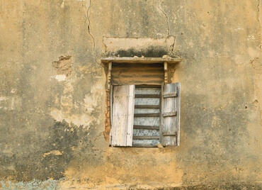
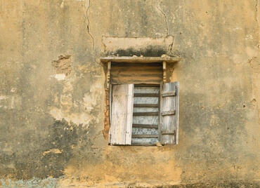

walls from home.
Walls from Home is a project about windows and doors of people's houses from the ancient city of ile-Ife, Osun State, Nigeria. Some homes are over 100 years old and passed down through generations. The project aims to capture these buildings' intricate designs and rich cultural heritage. In addition, it focuses on their doors and windows as a way to share an essential part of the culture with people from around the world. What do the windows and doors of homes in Ile-Ife reveal about their inhabitants? The walls of houses are often invisible to us, but they tell a story. They tell a story of families, lives lived, and lives remembered.
Seun Ogundele hopes to explore the history behind the walls that we all build around ourselves—and sometimes tear down—to reveal what our accounts can teach us about ourselves and each other and, most significantly, our forebears.
This photography project gives you a glimpse into the lives of people living in this historic part of Nigeria and their desire to protect what is theirs. You will see how the windows of their homes serve as the eyes through which they survey their surroundings and how the doors are the barriers that keep them safe from harm. There is no doubt that these walls do more than hold up a roof; they provide a sense of security and protection for those who live inside them.


 
